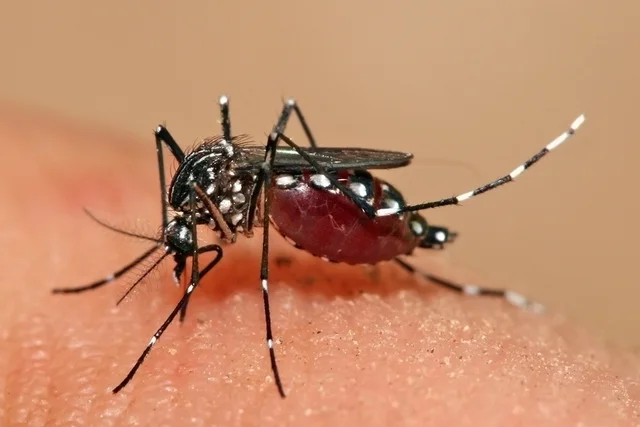

Felipe Belloli 2B
Combater o mosquito da denguee
PERGUNTAS SOBRE A DENGUE:
1-Quais são as medidas que podemos tomar para a prevenção da dengue?
2-Qual é o cliclo de vida do vírus da dengue dentro do mosquito transmisor Aedes Aegypti?
3-Em que locais o mosquito tem tendencia a se reproduzir?
4-De que forma a dengue é transmitida?

Clique no link abaixo para reponder o questionario
Clique aqui => Formulario sobre a dengue
Acesse sua página => >classroom 2° B